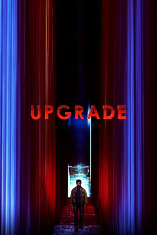

#10474 Upgrade
 gesehen am 11.01.2019
gesehen am 11.01.2019
 
 IMDB-Wertung: 7.6 / 10
IMDB-Wertung: 7.6 / 10  Tomatometer: 87
Tomatometer: 87  Metascore: 67
Metascore: 67 
In der nahen Zukunft hat der technische Fortschritt nahezu alle Bereiche des menschlichen Lebens übernommen. Doch der Protagonist Grey Trace versucht, in seinem Alltag jegliche Technik zu vermeiden. Als er schließlich nach einem Überfall gelähmt ist, bekommt er die Möglichkeit, durch einen implantierten Computerchip wieder voll und ganz am Leben teilzunehmen. Jedoch stellt Grey bald fest, dass der Computerchip mit dem Namen STEM ein eigenes Bewusstsein entwickelt.
Jahr: 2018
Dauer: 100 Minuten
FSK:
Land: Australien Studio: Apollo FilmsTonspuren: DD5.1 - ,
Untertitel: Deutsch,
Auflösung: 1080p (1920x808) Größe: 8294 MB
Genre: Action, Thriller, Sci-Fi
Regisseur: Leigh Whannell
Drehbuch: Leigh Whannell
Soundtrack: Jed Palmer
Darsteller:
 Logan Marshall-Green als Grey Trace
Logan Marshall-Green als Grey Trace- Steve Danielsen als Jeff Handley
- Abby Craden als Kara
 Harrison Gilbertson als Eron Keen
Harrison Gilbertson als Eron Keen Benedict Hardie als Fisk
Benedict Hardie als Fisk Christopher Kirby als Tolan
Christopher Kirby als Tolan- Kenny Low als Police Driver
 Betty Gabriel als Detective Cortez
Betty Gabriel als Detective Cortez- Ming-Zhu Hii als Dr Diana Gordon
- Simon Maiden als Stem
- Stephanie Demkiw als Technician
- Sachin Joab als Dr Bhatia
- Clayton Jacobson als Manny
 Arthur Angel als Old Bones Patron
Arthur Angel als Old Bones Patron- Michael M. Foster als Vessel Guard
- Zia Kelly als Vessel Guard
- James Ao als Militarised Police Officer (uncredited)
- Douglas Embry als Detective (uncredited)
- Melanie Vallejo als Asha Trace
- Richard Cawthorne als Serk
- Richard Anastasios als Wen
- Linda Cropper als Pamela
- Emily Havea als Nurse Henderson
- Manjot Jassal als Technician
- Esther Joseph als Technician
- Matt Davis als Homeless Man
- Puven Pather als Old Bones Heavy
- Ri-Jie Kwok als Old Bones Heavy
- Dave Mondon als Old Bones Heavy
- Rosco Campbell als VR Guy
- Kai Bradley als Jamie
- Mark Doggett als Business Man
- Renah Gallagher als Tiana (uncredited)
- Liam Howarth als Homeless Drifter (uncredited)
Datei: X:\2018(N-Z)\Upgrade (2018, FSK, 1920x808).mkv seit 11.01.2019
Festplatte: HD 2018(G-Z)-2019(A-Z)
 Es gibt insgesamt 172 Filme in der Gruppe '2018(N-Z)'
Es gibt insgesamt 172 Filme in der Gruppe '2018(N-Z)'